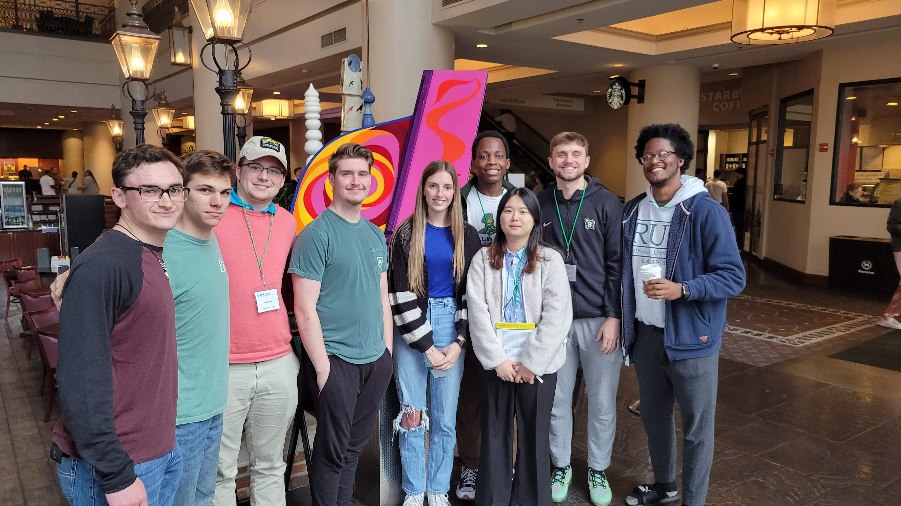
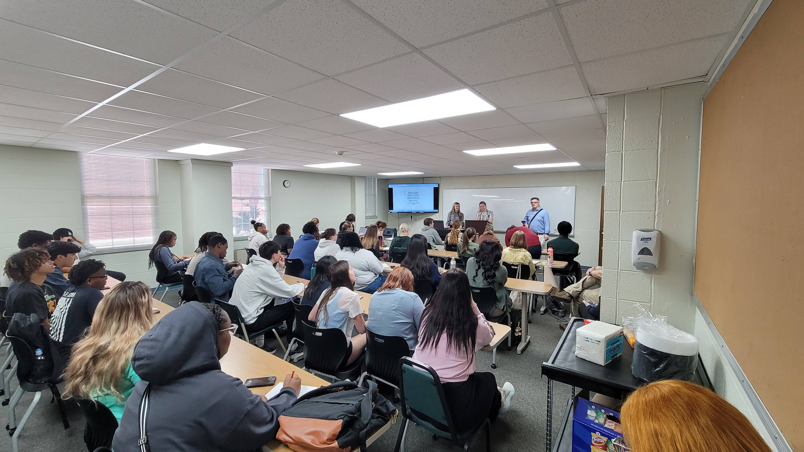
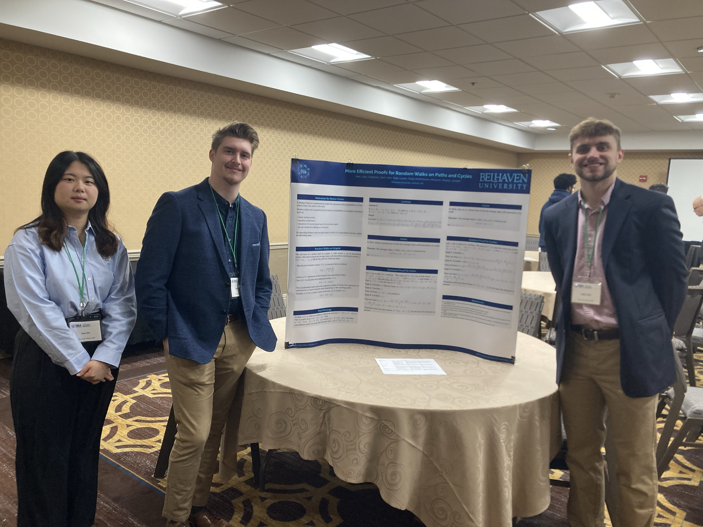
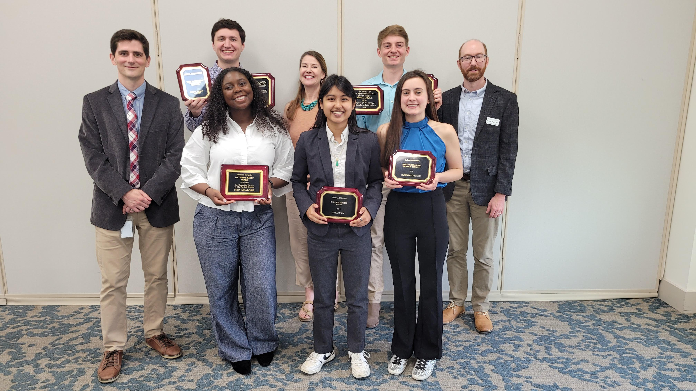
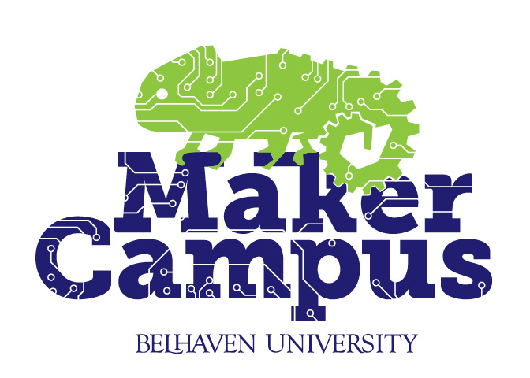
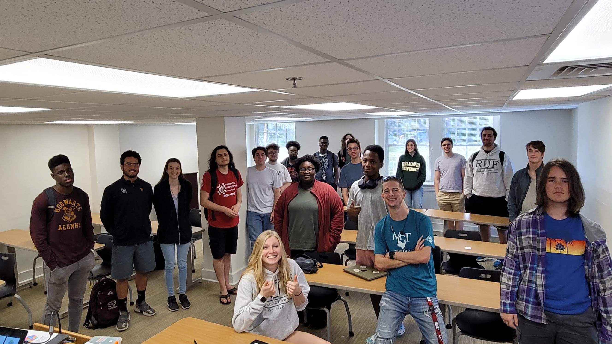
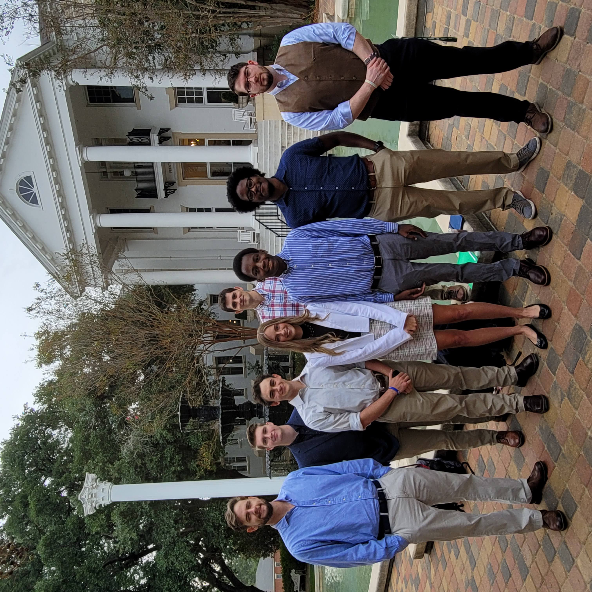
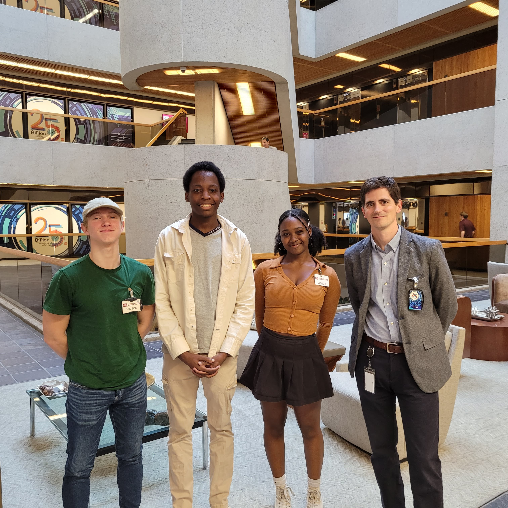

Section 1.1 Introduction to Belhaven Mathematics
Welcome to the Mathematics and Computer Science Department (MCS) at Belhaven University, one department under Belhaven’s School of Science & Mathematics. We work hard to provide unique learning opportunities, to do a lot of math, and to have fun while we grow. Maybe we can best summarize what Belhaven MCS is about with the three crucial pillars of our identity:
- Community,
- Academic experiences,
- Service.

We believe that our students reach their greatest potential by following these pillars, and we strive to incorporate these values throughout our curriculum.
Subsection 1.1.1 Community

We are very proud of the community of students, faculty, and staff that we have in the Belhaven Math & Computer Science department, and we’re excited about you joining us.
Do you want to get the most out of your college experience? We picked community as our first pillar for a reason. We want you to be a part of something special! Our most successful students at Belhaven are the ones who get involved early and often, and we encourage you to be an active part of our community.
And we have a lot of opportunities for you to get involved quickly!
Subsubsection 1.1.1.1 MCS Club
The student-led Math & Computer Science Club gets together frequently to play games, eat some food, and sneak in some math and computer science. The MCS Club members help each other with resumes, projects, 3D printing, and more.

The MCS Club is unique in that it also serves as student chapters for both the MAA (Mathematical Association of America) and the ACM (Association of Computing & Machinery), so it’s like two clubs in one. Club membership guarantees membership to one of these professional societies at a very discounted rate.

Do you want to join the MCS Club? Of course! Let your instructor know to get further details.
Subsubsection 1.1.1.2 STEM Events
The MCS Department and the School of Science and Mathematics hosts a variety of events. It’s important to join the larger science community at Belhaven. Usually food is involved too.
Be on the lookout for
-
ScienceFest: Help us give back to the community by participating in ScienceFest, the largest science festival in the state. We help the Mississippi Children’s Museum and Mississippi’s Museum of Natural Science by showing math-based games (and other hands-on science experiments) to children of the Jackson metro.

Figure 1.1.7.
Subsubsection 1.1.1.3 Good Communication
Good communication is so undervalued. Go talk to your professors. At Belhaven, we want to know our students. Meet your classmates. They’re going to help you through this next assignmnent.
Download the Microsoft Team app, and join the BelhavenSTEM Team. We post about upcoming events and have a channel specific to internships, scholarships, and research opportunities.
Subsection 1.1.2 Academic Experiences
Your degree is measured in credit hours. You’re taking classes ultimately to earn a degree. You’ll also expect some grades in those classes. BUT let’s be careful not to mistake grades and credit hours with actual learning. Our goal in the MCS Department is provide an environment of true learning. We want you to adapt a mentality of a continual learning: one who learns inside and outside of the classroom.
In addition to core classes such as Calculus, Linear Algebra, Discrete Mathematics, and Differential Equations, Belhaven’s MCS department delivers a number of curriculum add-ons. Let’s take a look at what additional academic experiences we offer.
Subsubsection 1.1.2.1 STEM Seminar
Meet professional scientists and mathematicians who share about what they do, how they got there, and how you can too. This is a great way to find internships and jobs.

Subsubsection 1.1.2.2 Mathematical Research
In MAT 391, 392, 491 and 492, students participate in the mathematical research process reviewing recent results of a select topic and attempting to further it. These students will present their findings as a poster and presentation at the Belhaven University Undergraduate Research Symposium (BUURS) and our sectional meetings of the MAA.


Subsection 1.1.3 Belhaven Maker Campus
The Belhaven Maker Campus is a collaboration between Math & Computer Science and Art & Design featuring formative technologies such as 3D printers, CAD drawing systems, laser engraving, and more. We are a community of engineering students, artists, and mathematicians wanting to get our hands busy making things with technology.

Join the Maker Campus, and you can gain access to both of our campuses maker labs. Design your own creations and 3D print them! Customize your gear with laser etching or make custom stickers. There are a lot of possibilities, and the Maker Campus is designed to make your ideas a reality.


Subsection 1.1.4 The Eyes of Faith Portfolio
What does the Bible say about mathematics? What does life as a Christian mathematician entail? What role does change and randomness play in God’s creation? These are deep questions that we will ask ourselves during throughout our mathematics coursework at Belhaven.
The book Mathematics through the Eyes of Faith by Russell Howell and James Bradley approaches these questions in an intellectually honest manner
[cross-reference to target(s) "biblio-eyes" missing or not unique]. Students will use this text as a reference to write their own thoughts in their Eyes of Faith Portfolio, a collaboration of Eyes of Faith papers written over several courses covering chapter of our reference text.The chapter breakdown follows curiously close to our major requirements and is summarized in the following table. (You might want to hang on to this one.) Table 1.1.14. Eyes of Faith Portfolio
| Course | Course Name | Eyes Chapter |
| MAT 207 | Calculus I | 1. The Big Questions |
| MAT 208 | Calculus II | 2. The Historical Context |
| MAT 209 | Calculus III | 3. Infinity |
| MAT 210 | Calculus IV | 7. Beauty |
| MAT 303 | Discrete Mathematics | 6. Proof and Truth |
| MAT 304 | Differential Equations | 8. Effectiveness |
| MAT 305 | Statistics and Probability | 5. Chance |
| MAT 311 | Linear Algebra | 4. Dimension |
| MAT 410 | Advanced Calculus | 9. Epistemology |
| MAT 491 | Intro to Math Research I | 10. Ontology |
| MAT 492 | Intro to Math Research II | 11. An Apology |
Subsection 1.1.5 For Engineering Majors
In addition to academic experiences math majors experience, students in Belhaven’s engineering partnership learn AutoCAD in PHY 119 Intro to Engineering interact with professional engineers from places like Yates construction, Raytheon, and Asset Engineering. take site visits to Ole Miss, Mississippi State, and places like Nissan and the U.S.
Army Corps of Engineers Research and Development Center (ERDC).

Subsection 1.1.6 For Actuarial Science Majors
For those majoring in Actuarial Sciences (ASM), students will learn statistical software such as R, sit for the first actuarial exam, the Probability Exam (SOA Exam P).

Subsection 1.1.7 Double Major and Minors
A mathematics major is very valuable, but pairing a math degree with another field will bring more opportunities than you might expect. We recommend either double-majoring or minoring in the following areas:
- Computer Science
- Chemistry or Physics
- Business or Accounting
- Tradigital Art
Besides these recommended degrees, we have had double majors in Dance, Theatre, Music, History, English, and so much more.